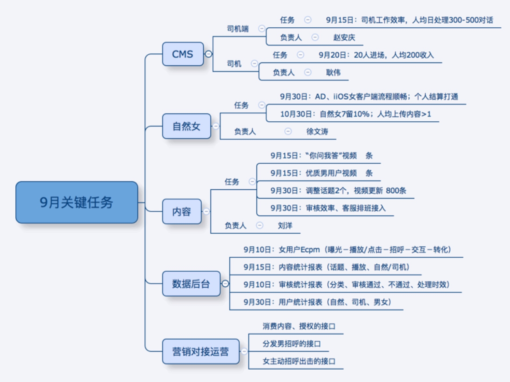

项目情况
产品、营销 按部就班往前走，正常。
女用户运营 采取冒进一点的策略，迅速往前跑，提前暴露问题。9月中旬的时候基本摸出基本运营框架并具备随时放大的准备。
自然女客户端和体验优化徐文涛已接手，目标定为女用户体验顺畅，日活和日均内容产出。
严欣、远炜 还是能找出关键问题并跟踪解决，目前还算是比较放心。

多平台
iOS平台
iOS是产品驱动型的平台，通过不断产品力的调整，在这个平台上稳扎稳打。个人感觉这个系统还是会下层到中低端市场。围绕iOS平台，能较为低门槛的建立团队，有利于人员的培养及输出。
iOS在渠道测通过代理商的力量，虽然目前的毛利有所提升，但产品的提升才是打开该平台空间的核心。
本周就iOS在新产品的重要性进行了分析，从业务和团队两个方面觉得有开启此平台的必要性，是拍拖多平台战略的重要组成部分。 具体工作主要围绕资源的圈定来进行。 初步圈定 文涛+苏捷 的组合。
微信
本周同商务三部进行了多次讨论，占潮已经接了这个任务，目标和里程碑已经确定，资源基本协调到位，下周就会开始启动。
9月15日前，微信的产品规划完成，9月底争取出第一版。
资源： 马占潮、马昊天、技术2名。
多产品
上周就新产品部的架构进行了部分的微调，基本上以 绝配和拍拖两个不同的产品表现往前跑，思明和杨华分别以内容和找人两条线分别往前跑。 两条线初步形成『产品多形态』的雏形，先期落地一个跑的比较快的形态交付给渠道。给内容运营和女用户运营体系搭建争取时间。同时多形态的雏形构架也可以以结果来倒逼人员的成长。
有缘网份额提升的思考
IPO这块有对有缘网份额提升的要求，广志本周也同我聊过这个事情。广志这边基本两个路径，1是通过营销中心加大在渠道对友缘的专注提升份额。 2是产品arpu的提升。
对于2，广志对用户中心arpu的提升信心不足。 思考如何同新产品形态结合，新产品从形态和内容来看，基本都是通过交友的定位来构建，如果结合有缘网，都需要从内容和女用户引导上往婚恋定位上倾斜，要不在资源上进行大量追加，而且成功率估计也只有三四成。
我的结论是：有缘网份额的提升需先从财务着手会比较靠谱，运营产品作为配合。